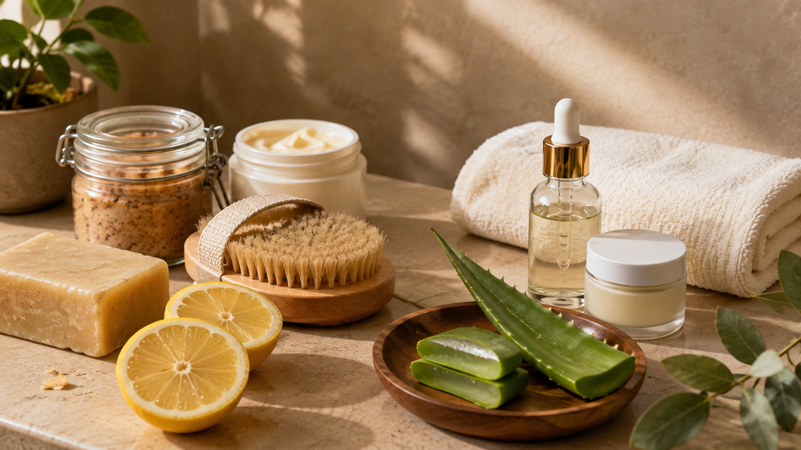
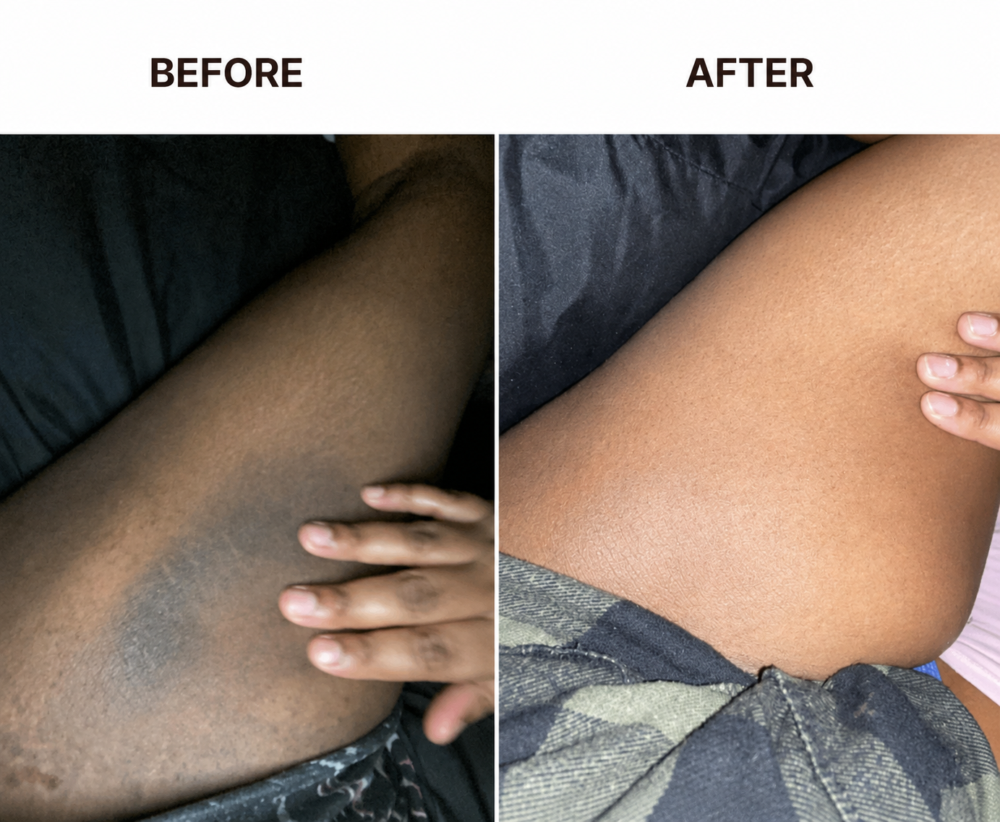
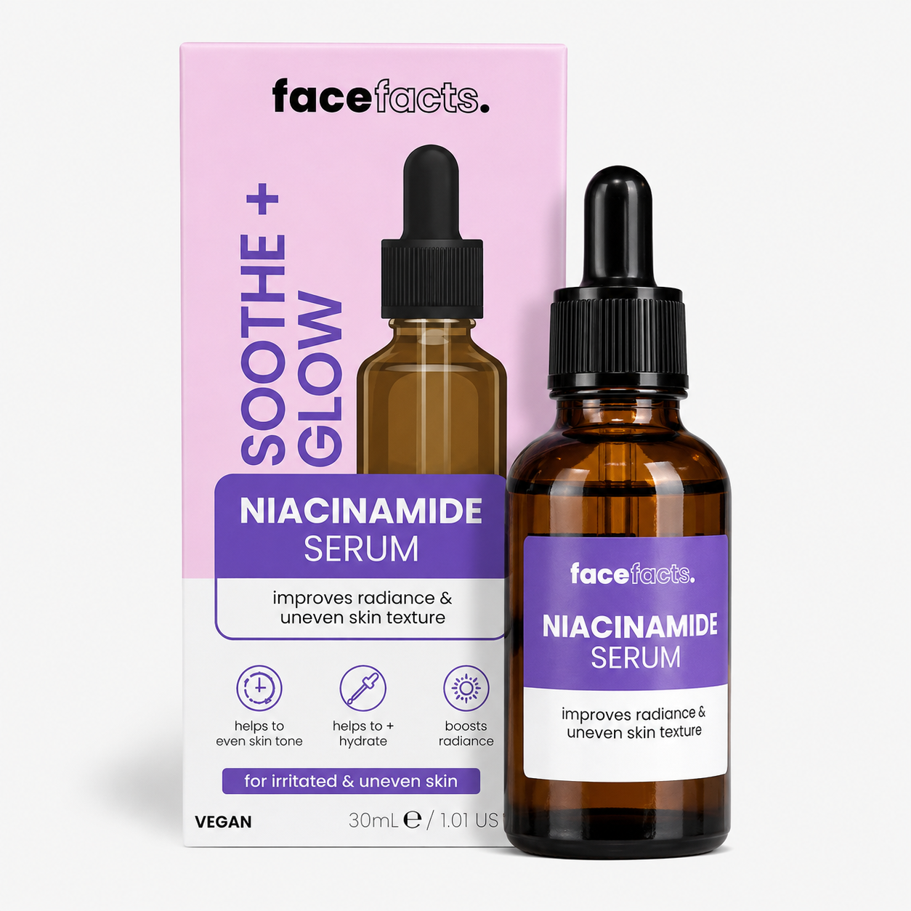
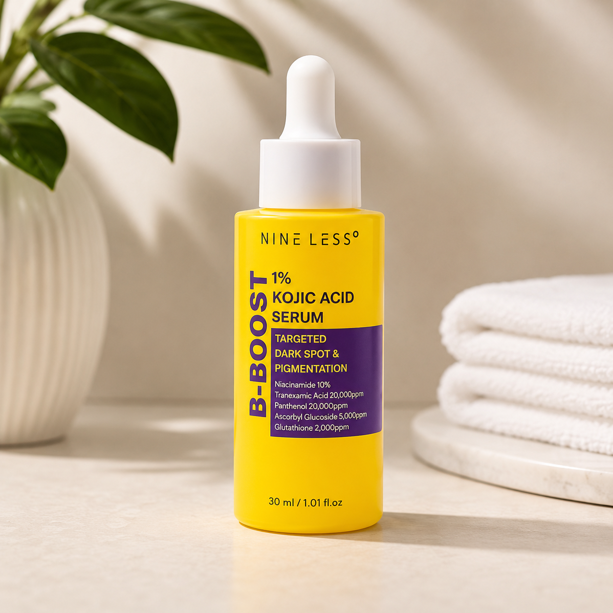
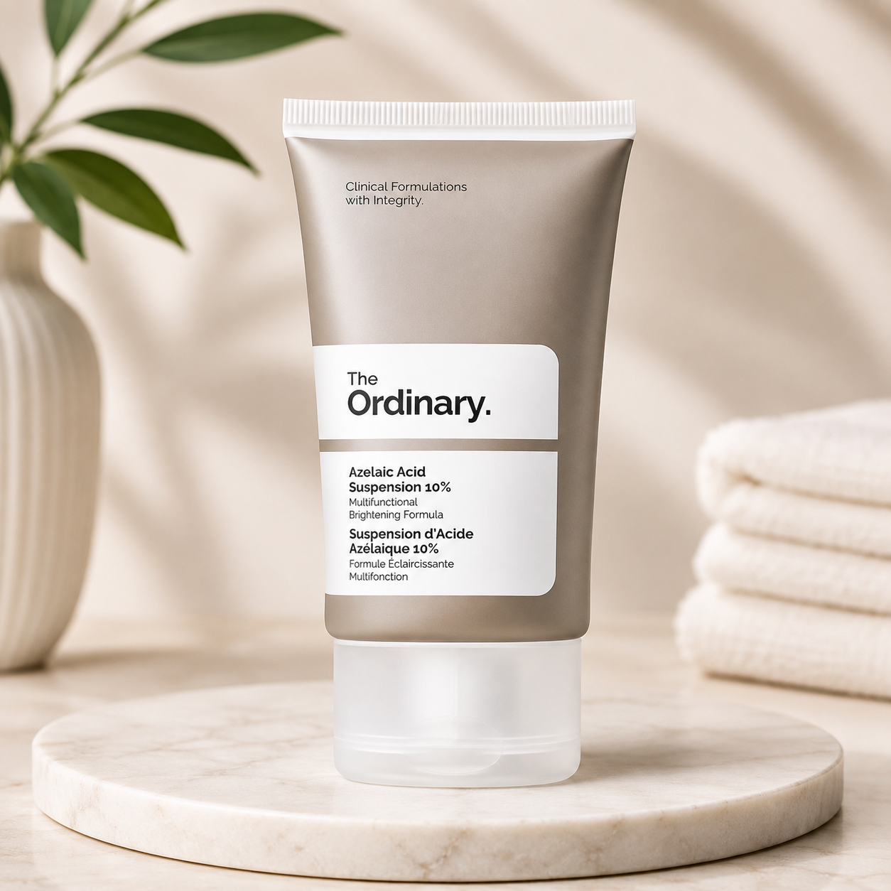

If you've looked down at your own skin more times than you can count and wondered what happened — and why nobody warned you this could happen in the first place — this page is for you.
You already know why you're still reading. Maybe it's the beach trip your friends keep planning that you keep finding a reason to skip. Maybe it's the moment you catch your own reflection getting dressed and look away a little faster than you used to. Maybe it's someone you're close to, and the small, constant calculation of how much light is in the room.
This thing has been quietly making decisions for you. What you wear. Where you go. How close you let someone get.
Here's what I need you to know before anything else: this is one of the most common skin concerns women deal with — and one of the least talked about, simply because it lives in a part of the body nobody sees unless you choose to let them. That privacy is exactly why it feels so isolating, even though so many women near you are dealing with the exact same thing right now.
It has nothing to do with cleanliness. It never did.
Once you understand what's actually happening under your skin, the shame around it tends to just … evaporate.
Why Everything You've Already Tried Hasn't Worked
I'd guess this isn't your first attempt at fixing this. Let's go through the usual suspects, one at a time.

The market soap. Somebody's aunty, somebody's hairdresser, somebody's cousin's friend swore by it. Weeks of using it religiously later, nothing changed — maybe your skin even felt rougher. Most of these soaps are made for the whole body, not for a delicate, already-irritated area. They add stress to skin that's already struggling. They don't fix the problem.
Lemon juice. Cheap, already in the kitchen, and somebody told you citric acid lightens skin. But raw lemon juice is highly acidic and doesn't distinguish between helping your skin and burning it. On already-sensitive skin, it often makes the discoloration worse, not better.
The Instagram cream. This one hurts differently, because it wasn't just time you lost — it was money too. The before-and-afters looked convincing. Weeks later the tub sits half-used in your bathroom cabinet. Most of these products don't disclose what's actually in them, and many lean on harsh bleaching agents that lighten skin unevenly, or damage it, instead of healing it.
None of those failed because you did something wrong. They failed because every one of them treated the surface without understanding what was actually happening underneath it.
The Actual Cause — In Plain English
Your skin has cells called melanocytes, and their job is to produce melanin — the pigment that gives skin its color. Normally they work quietly in the background. But when skin in one spot is irritated repeatedly — through friction, shaving, or tight clothing rubbing against it day after day — those melanocytes get triggered. They go into overdrive, producing extra melanin as a kind of defense response.
That extra melanin is the darker patch you're seeing. It's called post-inflammatory hyperpigmentation — the same process behind a dark mark left after a pimple heals.
Your skin isn't broken. It's doing something it was designed to do, just in a spot you'd rather it didn't. Inner thighs take more repeated friction than almost anywhere else on your body — walking, shaving, tight jeans — which is exactly why this is one of the most common places for it to show up.
The Big Idea
If the problem is repeated irritation triggering extra melanin production, the fix isn't a mystery. It comes down to two things working together: calming the irritation response, and helping your skin let go of the extra pigment it's already built up.
That's the whole game. Not a miracle cream. Not a magic soap. A structured process that addresses both sides of the problem, in the right order.
See The Difference
A clearer picture of what consistent skincare can look like.

Individual results vary. Skin changes depend on the cause of pigmentation, consistency, skin sensitivity, and other factors.
The Dark Thigh Recovery System
A 14-day plan, broken into three phases, built around the four ingredients that dermatology actually backs.
Everything I've learned from years of walking women through this — documented, verified, and written in plain language, so you can start tonight.
The Three Phases
Phase One — Understand (Days 1–2). A quick self-check, a day-one photo (your own eyes lie about gradual change — a photo doesn't), and choosing the right active ingredient for your skin.
Phase Two — Act (Days 3–14). A simple daily routine built around your chosen active, plus the one step almost every guide forgets — the step that quietly undoes progress if you skip it.
Phase Three — Lock It In (Beyond Day 14). The five-minute weekly habit that keeps it from creeping back in six months, which is where most people who "fix" this once end up right back where they started.
The Four Ingredients

Best for sensitive skin / first-time actives Niacinamide Interrupts the process that moves melanin from your skin cells to the surface — and calms the irritation that started this whole cycle in the first place. Best for faster visible change
Glycolic Acid
Gently exfoliates the outer layer, speeding up how quickly your skin
sheds pigmented cells and replaces them with fresh ones underneath.
Best for faster visible change
Glycolic Acid
Gently exfoliates the outer layer, speeding up how quickly your skin
sheds pigmented cells and replaces them with fresh ones underneath.

Best for stubborn, long-standing discoloration Kojic Acid Blocks the enzyme your skin uses to produce melanin in the first place — going straight to the source.
Best for reactive skin that still wants results Azelaic Acid The quiet all-rounder — targets excess pigment while calming inflammation at the same time.What's Inside the Guide
- The full 14-day, three-phase system — exactly what to do, day by day. Ch. 4–7
- How to pick the right active ingredient for your skin type — instead of guessing and irritating yourself. Ch. 5
- The one mistake that quietly cancels your progress — the step almost everyone forgets. Ch. 6
- The patch-test protocol — so you never repeat the mistake that costs a full week of setback. Ch. 5
- Bonus: the pharmacy shopping list — exact ingredient names and concentrations to ask for, and what to avoid on the label. Bonus 2
- Bonus: the Flare-Up Fix — what to do if your skin reacts, and when a reaction actually means "see a doctor." Bonus 3
- The five-minute weekly habit that keeps this from quietly returning in six months. Ch. 7
- The Quick Reference Cheat Sheet — the entire system on one page you can keep on your phone. Bonus 1
Compare That To What You've Already Spent
| Tried | Why it didn't work | |
|---|---|---|
| Market soap, weeks of use | ✗ | Made for the whole body, not delicate, irritated skin |
| Lemon juice | ✗ | Highly acidic — often irritates the area further |
| Instagram "miracle" cream | ✗ | Undisclosed ingredients, often harsh bleaching agents |
| A traditional remedy from a relative | ✗ | No way to know what's actually addressing the cause |
| Doing nothing, hoping it fades on its own | ✗ | Untreated friction just keeps re-triggering the same cycle |
| The real cost — the one nobody puts a number on | Every beach trip skipped. Every excuse made. Every moment you didn't let someone get close. | |
How Much Does This Cost?
Between research, writing, dermatology-informed fact-checking, design, and building the delivery system, putting this guide together took real time and real cost. A fair price for the finished system would sit well above what I'm actually charging.
But I know money is tight for a lot of the women reading this. So here's where it lands, today:
Delivered straight to your email/WhatsApp within minutes of payment.
What You're Getting, In Full

The Quick Reference Cheat Sheet
Your entire daily routine, ingredient guide, and weekly checklist condensed onto one page — built to live on your phone or your bathroom mirror, so you never have to flip back through chapters once you know the system.
FREE today — included with every purchaseThe Pharmacy & Market Shopping List
Exactly what to look for on a label — ingredient names, concentrations, and the phrases to use with a pharmacist — plus what to avoid entirely, including unregulated high-strength hydroquinone and generic "skin lightening" steroid creams.
FREE today — included with every purchaseThe Flare-Up Fix
What normal adjustment looks like versus what needs a pause, how to reintroduce an active after a reaction, and the specific signs that mean it's time to see a doctor instead of troubleshooting further.
FREE today — included with every purchaseEverything You're Getting Today
- The Dark Thigh Recovery System — the full 14-day guide
- Bonus 1: The Quick Reference Cheat Sheet
- Bonus 2: The Pharmacy & Market Shopping List
- Bonus 3: The Flare-Up Fix
You pay today: ₦7,500
Get Instant AccessWhat You'll Learn Inside
Chapter 4
Learn how repeated friction, shaving, and tight clothing can contribute to irritation and post-inflammatory hyperpigmentation, and when darker skin may need professional assessment.
Chapter 5
Compare niacinamide, glycolic acid, kojic acid, and azelaic acid, with guidance on choosing an option and introducing it carefully rather than combining several strong products at once.
Chapters 4–7
Follow a structured routine covering gentle cleansing, the selected active, moisturization, progress tracking, and the gradual approach recommended throughout the system.
Chapter 6
Learn why sun protection matters when the area is exposed and how avoiding unnecessary irritation can help prevent the cycle from continuing.
Bonus 3
Use the Flare-Up Fix to distinguish normal adjustment from a reaction that calls for a pause, and recognize when it is better to seek professional medical advice.
Comments
Quick Routine Preview
Routine preview based on the guide. Always follow the product label and patch-test new products.
Once You Click That Button
- You're taken to a secure payment page.
- Complete payment — card, bank transfer, or your usual method.
- Your guide and all three bonuses land in your email/WhatsApp within minutes.
It's me, Babatunde. As long as your payment goes through, your access is guaranteed.
30-Day Money-Back Guarantee
Follow the system as written for 30 days. If you've done that and you're not seeing a difference, email me and I'll refund you in full — no lengthy explanation required.
Right Now, You Have Two Choices
If you close this page
- The same routine you've already tried keeps not working.
- The next beach trip gets the same excuse as the last one.
- You keep quietly Googling this at 1am, alone.
- Six months from now, nothing's different.
- The mental math before getting dressed continues.
If you get the guide today
- You understand exactly why this happened — no more guessing.
- You have a specific ingredient and routine, chosen for your skin.
- You know what actually protects the progress you make.
- You have a plan to keep it from quietly coming back.
- Fourteen days from now, you're somewhere new.
Questions
How is the guide delivered?
Straight to your email and/or WhatsApp within minutes of payment, as a PDF you can read on your phone or print.
Are the ingredients easy to find?
Yes — all four are available at general pharmacies and supermarket skincare aisles. The Pharmacy Shopping List bonus tells you exactly what to ask for.
What if my case feels more severe or long-standing?
The guide covers how to choose a stronger active (like kojic acid) for stubborn, long-standing discoloration, and how to adjust the routine if progress feels slow by day 14.
What if I notice something that seems different from typical darkening?
Chapter 4 walks through a self-check, including signs (velvety texture, darkening in other skin folds) that are worth having a doctor look at rather than self-treating. This guide is educational, not a diagnosis.
Is the guarantee real?
Yes. Follow the system for 30 days — if it hasn't worked, email for a full refund.
Why is this different from everything else I've tried?
Because it treats the actual cause — repeated irritation triggering excess melanin — instead of just the surface. It's built around ingredients dermatology backs, not folklore, with a system for keeping results instead of watching them fade back in.
With care for your skin,
Babatunde